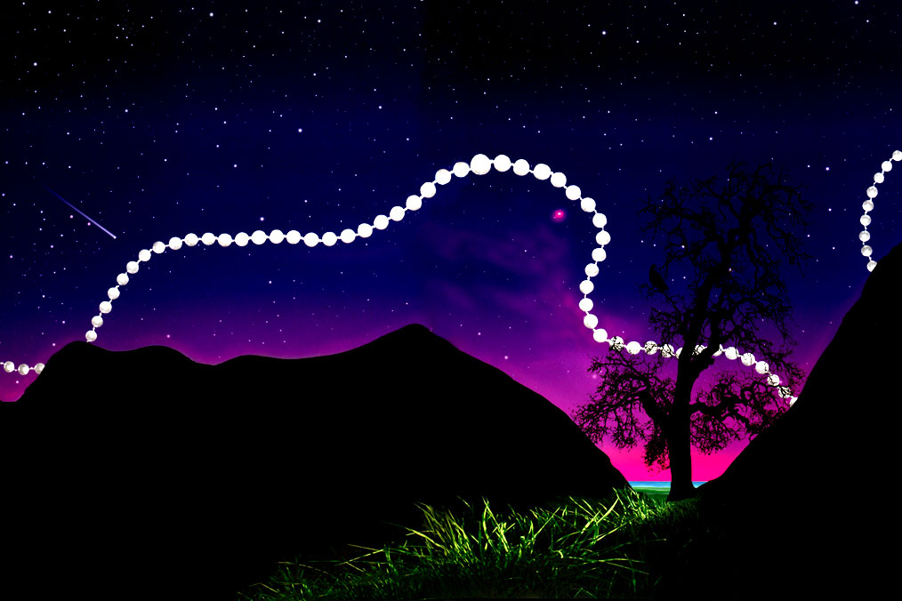

El Señor Krishna continuo: “Soy todo lo que aconteció en el pasado, todo lo que
esta aconteciendo en el presente, y todo lo que aun esta por acontecer.”“Todo ocurre por mi deseo. Hasta las hojas de los arboles se mueven por mi deseo. Todo viene de mi. Yo soy la fuente de los mundos materiales y espirituales.”
“Todo reposa en Mi, así como perlas reposan en un hilo. No hay verdad superior a mi. Y yo soy tu amigo mas querido.”